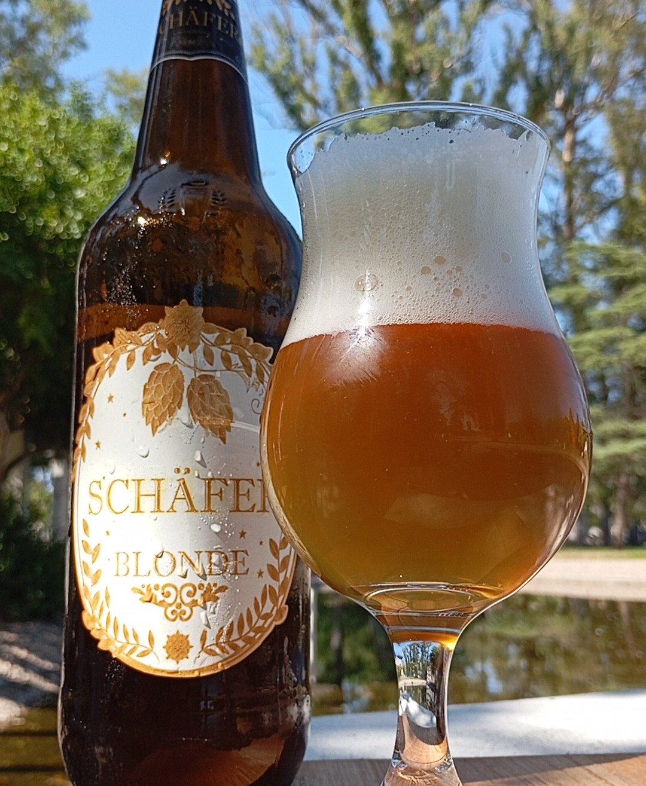
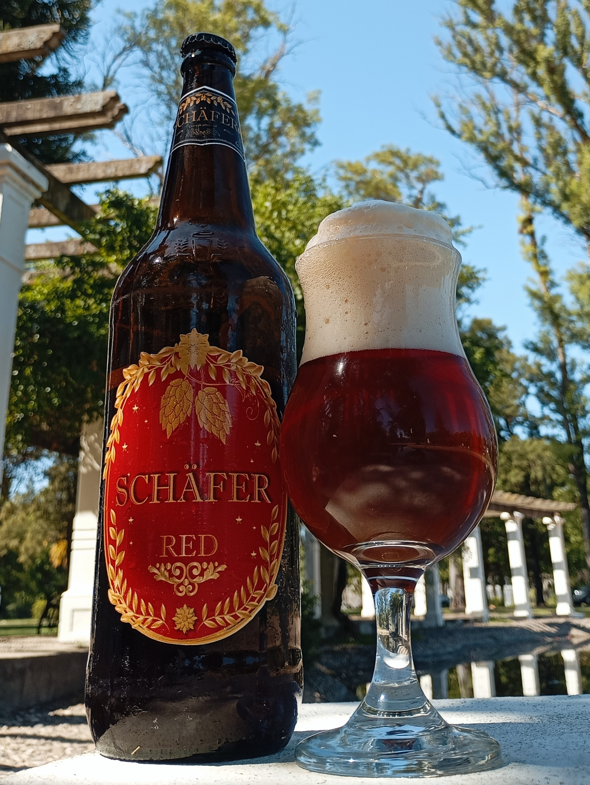
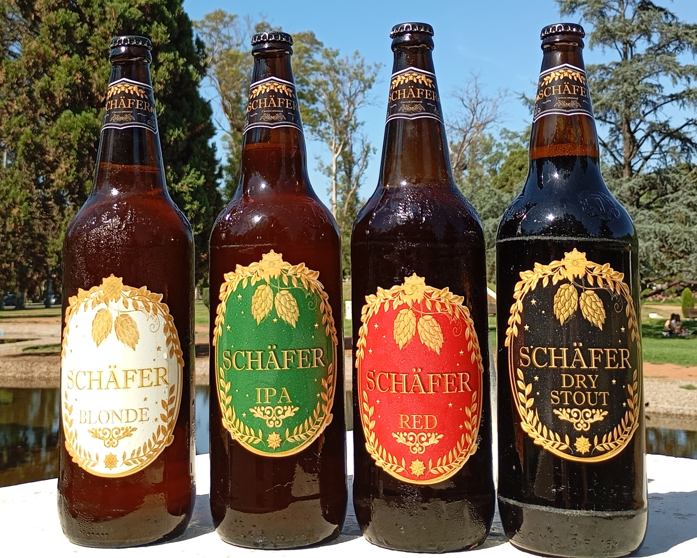

Nuestras cervezas
Schäfer es una cerveza pensada para acompañar reuniones, celebraciones, una buena comida o... simplemente disfrutar de un buen momento.
Explorá nuestra selección de cervezas artesanales!

Blonde Ale
Cerveza rubia de cuerpo ligero con notas frutales y final refrescante. Perfecta para cualquier ocasión.
Consultar

Irish Red
Cerveza de color ámbar rojizo con notas de caramelo y un equilibrio perfecto entre malta y lúpulo.
Consultar
IPA
Cerveza con intenso aroma a lúpulo, notas cítricas y un amargor característico que la hace única.
Consultar
Stout
Cerveza negra de cuerpo completo con notas de café, chocolate y un final suave y cremoso.
Consultar

Cajón Surtido
Una selección de nuestras mejores cervezas para que puedas disfrutar de diferentes estilos.
ConsultarHacemos ventas tanto al público como para comercios.
Consultanos 🍻